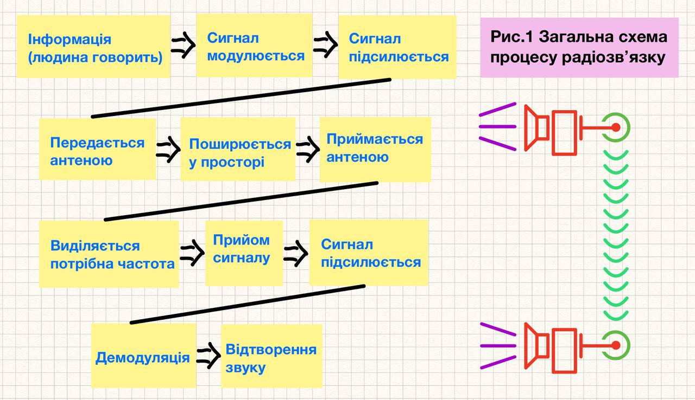

Історія радіозв'язку ч.1
fan історія розвитку
https://www.youtube.com/live/BC3Oi4zYF1s?si=5zZ1Jh69f3EpU7yD viktor
https://www.youtube.com/live/fCcUIfkFBkA?si=lYpQfG8-_EnDVoM2 телебачення
(Опрацювати)
http://library.khai.edu/ua/virtual-dop/yastoryaya-radyao
https://ye.ua/istiriya/959_Telegraf_telefon_radio__pershi_kroki__na_Podilli.html
https://www.facebook.com/GazetaSvit/posts/%D1%85%D1%82%D0%BE-%D1%81%D1%82%D0%B2%D0%BE%D1%80%D0%B8%D0%B2-%D0%B2-%D1%83%D0%BA%D1%80%D0%B0%D1%97%D0%BD%D1%96-%D0%BF%D0%B5%D1%80%D1%88%D1%83-%D1%81%D1%82%D0%B0%D0%BD%D1%86%D1%96%D1%8E-%D1%80%D0%B0%D0%B4%D1%96%D0%BE%D0%BC%D0%BE%D0%B2%D0%BB%D0%B5%D0%BD%D0%BD%D1%8F-%D0%BD%D0%B8%D0%BD%D1%96%D1%88%D0%BD%D1%8C%D0%BE%D0%B3%D0%BE-%D1%80%D0%BE%D0%BA%D1%83-16-%D0%BB%D0%B8%D1%81%D1%82%D0%BE%D0%BF%D0%B0%D0%B4%D0%B0-%D1%83/870845861908524/
https://gdz4you.com/prezentaciyi/fizyka/istoriya-vynyknennya-radio-22614/
лампи:
https://www.youtube.com/watch?v=FXuTS4D3QrE
телеграф:
https://www.youtube.com/watch?v=ZurwtrO02cc&t=83s
транзистор
https://x.com/cqcqcqdx/status/1960511665101021576?t=vLRyoacSUjkwSrMga6PRSQ&s=35
Історія радіозв'язку ч.2 - про радіотехніку та радіозвязок в Україні..(+вуз)
Історія радіозв'язку ч.3 - Короткохвильовий, ультракороткохвильовий, супутниковий та інші види радіозв'язку(реб.рер)??.
періоди . технології . іновації. Робити розділ підсумки для кожного періоду.
Зайти фото Перших радіо і для кожного етапу.
радіо і телеграф прискорили поширення інформації і змінили світ.
В статті, історію радіозвязку поділено на ключові періоди, пов’язані з винаходами, інноваціями.
Задача статті окреслити основні періоди та етапи у розвитку радіозвязку.
Кожен етап характеризується вдосконаленням технологій обробки та передачі сигналів
і їх інтеграцією в різні сфери життя.
Кожен етап мав ключові відкриття, технологічі прориви та зміни
підходів до передачі й обробки радіосигналів.
Еволюція і розвиток радіотехніки, огляд:
(кінець XIX — початок XX ст.) – Зародження радіотехніки і радіозв’язку
1831–1873: Теоретичні основи.
Майкл Фарадей відкрив електромагнітну індукцію, Джеймс Максвелл описав теорію електромагнітних хвиль(1873),
передбачивши можливість передачі сигналів без проводів. Далі Генріх Герц провів експерименти з бездротовою передачею
сигналів у 1886-1888 підтвердив існування радіохвиль, створивши перші примітивні передавач і приймач -.
Герц спочатку не бачив практичного застосування радіохвиль. Коли його запитали про їх корисність, він відповів:
“Це абсолютно марно… це лише експеримент, який доводить, що маестро Максвелл був правий”. Він помилково вважав,
що радіохвилі не можуть поширюватися на великі відстані.
1890-1910: Початок XX століття. Перші практичні досягнення.Гульєльмо Марконі(Італія) розробили перші
радіопередавачі він був піонером практичного радіозв’язку і
здійснив перші бездротові передачі на великі відстані,
включно з передачею через Атлантику - трансатлантичний радіозвязок happiest (з Англії до Канади) у 1901 році.
З 1910х до 30х — Розвиток амплітудної модуляції (AM).
Амплітудна модуляція як технологія передачі звуку сформувалась у 1900–1906 роках,
а з 1910-х стала основою радіомовлення.
У 1943 Верховний суд США визнав, що Тесла подав патент раніше за Марконі але комерційна першість
залишилася за італійцем. Перше радіо "хакерство" відбулося підчас демонстрації Марконі бездротового
телеграфу у Лондоні(1903) його сигнал перехопив Невіл Масклін – інженер-конкурент.
Він під’єднався до трансляції та передавав власні повідомлення, включаючи вірші та образи на адресу Марконі.
Це вважається першим у світі радіоперешкоджанням (джемінгом).
Радіотехніка(доповни): експериментальні установки,
іскрові передавачі, прості приймачі(когерери - що таке когерер. пояснення з книг або від п.віктора).
Перші радіопередавачі (іскрові, дугові) могли передавати лише
телеграфні сигнали(крапки й тире) абетку Морзе.
Перша передача голосу відбулася лише в 1906 році завдяки Реджинальду Фессендену,
який використав амплітудну модуляцію (AM).
1904 рік чергова революцію в радіотехніці, винахід електронної лампи - електронний діод Джона Флемінга(Британія).
1906: електронний тріод Лі Де Фореста, що став основою для підсилення та генерації радіосигналів
(додати зображення, хто які книги видавав і як почали викладати у вузах).
Комерційне використання радіо для морського зв’язку почалось В 1910-ті, рятувальних операцій(Треба приклади де і як)
30ті–40ві — Створення перших радарів, військове застосування радіотехніки.
Поява підсилення сигналу(чому про підсилення тут? вже було вище).
3. 1920-ті і 40-ві – Ера радіомовлення. Поширення радіо в світі
Люди почали передавати інформацію без дротів —
революція для зв’язку на морі, у війську і науці. Удосконалювалися радіоприймачі та передавачі(перші ретранслятори?).
Розвиток частотної модуляції(FM), яка забезпечувала кращу якість звуку.
Розвиток аматорського радіозв’язку та дальній морський зв’язок.
Масове застосування електронних ламп у передавачах і приймачах, протривало до 1950-х.
1920 - Початок регулярного радіомовлення -перші радіостанції в США та Європі.
Також з’явилися перші комерційні радіостанції.
1922 — перші радіостанції у Франції, Німеччині, Великобританії, СРСР.
У 20-х вважалося, що радіохвилі довжиною менше 200м непридатні для далекого зв’язку.
Радіоаматори випадково відкрили короткохвильовий зв’язок.
Вони використовували дешеві передавачі і виявили,
що КХ можуть огинати Землю завдяки іоносфері - так зявився КХ-радіозв’язок,
передача сигналу на великі відстані
1900–1901 рр. — Реджинальд Фессенден вперше реалізував передачу мови радіохвилями саме за допомогою амплітудної модуляції.
1906 р. — відома різдвяна радіопередача Фессендена (музика і мова), що вважається першим практичним застосуванням AM.
1910–1920-ті роки — AM стає стандартом радіомовлення у світі.
До цього Марконі використовував іскрові передавачі, де інформація передавалась не AM у сучасному сенсі,
а телеграфними імпульсами (вкл/викл носія).
1924 р. В Україні відбулися перші передачі з Харкова, а згодом Києва.
1930-ті — «золотий вік радіо», коли радіо стає
основним джерелом новин, музики, драм, пропаганди. СРСР — розвиток масового радіомовлення
через гучномовці («репродуктори») в містах і селах.(купити книгу про укр радіо)
Німеччина та Італія — використовували радіо для політичної агітації.
1933: Едвін Армстронг винайшов частотну модуляцію(FM), яка забезпечувала кращу якість звуку.
1936 — перше регулярне ТБ (BBC, Велика Британія).
1939 — телетрансляції в США (NBC). розвиток телебачення
(1930–1950-ті) Люди отримали миттєвий доступ до інформації,
новин, музики. Змінилася модель споживання культури — радіотеатри, передачі наживо.
Початок масового формування громадської думки.
https://www.youtube.com/watch?v=hDR8X1Y6Y28(fhhs). акторка Геді Ламарр і
Джордж Антейл придумали технологію, яка стала основою Wi-Fi:
Частотне стрибкоподібне розширення спектру (FHSS/ППРЧ) – їхній винахід 1942 року,
призначений для захисту радіокерованих торпед від глушіння.
Перша радіореклама коштувала 50 доларів .
У 1922 році радіостанція WEAF у Нью-Йорку транслювала першу платну рекламу.
Це була 10-хвилинна реклама квартир у Квінсі за 50 доларів, що еквівалентно приблизно 800 доларів сьогодні.
1940-ві – 1950-ті – військові та післявоєнні технології: виникнення ТБ.
Активне використання радіотехніки у Другій світовій війні (радари, радіонавігація, системи зв’язку).
Під час Другої світової німці Німецькі підводні човни використовували буйкові антени: підводний човен випускав поплавок із дротом,
який тримався на поверхні. Але дельфіни та акули часто перегризали кабель! Тоді німці почали обмотувати його мідними шипами. 1947:
Винайдення транзистора в Bell Labs (Джон Бардін, Волтер Браттейн, Вільям Шоклі), що замінив громіздкі лампи й зробив радіо компактнішим.
1950-ті: Початок телевізійного мовлення, яке базувалося на радіотехнологіях.Бум популярності телебачення у США, Європі, СРСР.
Телебачення спочатку передавалося тими ж радіохвилями, але з відеосигналом.Висновки: Радіо зміщується на інформацію та музику,
ТБ стає головним каналом візуальної інформації.Формується нова масова культура, реклама, візуальні новини. З’являється вплив
телебачення на політику (дебати, виступи лідерів тощо).
3. Транзисторний і мікроелектронний етап (1950–1970-ті) 1950–1960-ті
— Масове заміщення ламп транзисторами (менше споживання енергії, більша надійність).
1962 — Запуск першого активного супутника зв’язку Telstar. 1960–1970-ті — Поширення телевізорів, радіоприймачів, мобільних засобів зв’язку.
Радіотехніка: мініатюризація приладів, розвиток радіоелектроніки, формування супутникового зв’язку. Транзисторна революція (1950-1970 рр.)
Винахід транзистора в 1947 році кардинально змінив радіотехніку. Радіоприймачі стали компактнішими, надійнішими та енергоефективнішими,
поширення телебачення. У 1957 році запущено перший штучний супутник, що відкрило нову еру в радіозв’язку. У 1960-70х роках піратські
радіостанції передавали з кораблів у міжнародних водах, обходячи державні монополії на радіомовлення.
Найвідоміша - Radio Caroline - впливала на музичну культуру Великобританії і змусила BBC змінити свою політику.
1960-ті – 1980-ті – цифрова революція та супутниковий зв’язок:
Розвиток супутникового зв’язку (запуск першого комерційного
супутника Telstar у 1962 році). Поява інтегральних схем в семидесяті, що уможливила створення складних радіопристроїв. 1980-ті:
Початок цифрової обробки сигналів, перехід від аналогових до цифрових систем зв’язку.
4. Період цифрових технологій (1980-ті – 2000-ні)
Перехід від аналогової до цифрової модуляції (FM, PCM, QAM).
Розвиток мобільного зв’язку (1G → 2G GSM → 3G). Широке застосування мікропроцесорів у радіоапаратурі. Цифрове телебачення,
інтернет через радіоканали (Wi-Fi, Bluetooth). Цифрова ера (1970-2000 рр.) Впровадження мікропроцесорів та цифрових технологій
призвело до появи цифрових систем зв’язку. Розвивалися стільникові мережі, починаючи з аналогових систем першого покоління.
З’явилися персональні комп’ютери з можливостями радіозв’язку. 1990-ті – 2000-ні – мобільний зв’язок і цифрова ера: 1990-ті:
Розвиток стільникового зв’язку (2G, GSM), поява SMS і мобільного інтернету. 2000-ні: Впровадження 3G, Wi-Fi,
Bluetooth, що розширили можливості бездротового зв’язку. 2007: Смартфони (зокрема iPhone) революціонізували використання радіотехнологій
у повсякденному житті.Сучасна епоха (2000 рр. - до наших днів)Масове впровадження бездротових технологій: Wi-Fi, Bluetooth, LTE, 5G.
Розвиток Інтернету речей (IoT), смартфонів, планшетів. Програмно-визначені радіосистеми (SDR) дозволяють гнучко налаштовувати радіопристрої.
2010-ті – сучасність – 5G і IoT: 2010-ті: Впровадження 4G, що забезпечило високошвидкісний мобільний інтернет.
2020-ті: Розгортання мереж 5G, що підтримують Інтернет речей (IoT), автономні транспортні засоби та розумні міста.
Сучасні тенденції: Розвиток 6G, квантових комунікацій, штучного інтелекту в радіотехніці.
5. Сучасний етап (2010–наш час) 5G/6G, IoT, SDR.
Штучний інтелект в аналізі сигналів.Ультракомпактні мікрохвильові та міліметрові системи.Масове застосування радіотехніки в медицині,
автономному транспорті, військовій справі. радіотехніка: гібридна інтеграція радіотехніки з цифровими платформами, високочастотна техніка,
штучний інтелект.цифрові алгоритми обробки сигналів,програмно-керовані системи, інтеграція з ІТ.
üìà Підсумкова таблиця
| Період |
Основні досягнення |
Характеристика |
| Кінець XIX ст. |
Герц, Попов, Марконі |
Іскрове радіо, експерименти |
| 1900–1940-ві |
Електронні лампи, AM, радар |
Радіомовлення, радіолокація |
| 1950–1970-ті |
Транзистори, супутники |
Мініатюризація, мобільний зв’язок |
| 1980–2000-ні |
Цифрова обробка, 2G–3G, DSP |
Інтеграція з ІТ, цифрова модуляція |
| 2010 – сьогодення |
5G, SDR, AI, IoT |
Хмарні системи, розумні радіо |
Основні види застосування радіозв’язку(TABLE_1)
Радіомовлення - AM/FM радіостанції/- Цифрове радіомовлення (DAB, HD Radio)/- Інтернет-радіо та подкастинг
Телебачення- Аналогове та цифрове телебачення/ - Супутникове та кабельне ТБ/ - Стримінгові сервіси
Стільниковий зв’язок - Мобільні телефони всіх поколінь (2G, 3G, 4G, 5G)/- Передача даних та інтернет/- Мобільні додатки та сервіси
Бездротові мережі - Wi-Fi для локальних мереж/- Bluetooth для короткодистанційного зв’язку/- WiMAX для широкосмугового доступу
Супутниковий зв’язок - Глобальні системи зв’язку/- GPS та інші навігаційні системи/ - Супутникове телебачення та інтернет
Спеціалізовані системи - Авіаційний зв’язок/- Морський зв’язок/- Радіоаматорство/- Екстрені служби та рятувальні операції
Військове застосування - Тактичний зв’язок/- Радари та системи виявлення/- Електронна боротьба
Промислові застосування - Автоматизація виробництва/- Телеметрія та дистанційне управління/.- Моніторинг та контроль систем
Транспорт - Авіаційне радіообладнання/- Залізничний зв’язок/- Автомобільні системи зв’язку
Медичні застосування - Бездротові медичні пристрої /- Моніторинг пацієнтів
Інтернет речей (IoT) - Розумні будинки / - Промисловий IoT / - Носимі пристрої
Історія розвитку військового радіозв’язку-ПОЧАТОК військовий звязок має свою специфіку – надійність, безпека, мобільність і стійкість до перешкод.
Історія Від простих сигнальних систем до сучасних цифрових комплексів, що забезпечують глобальну комунікацію в армії.
Багато радіотехнологій дійсно мали військове походження, але згодом стали доступні цивільним. Військові інвестиції часто стимулюють інновації,
які потім змінюють цивільне життя.
Ось основні етапи:
Кінець XIX – початок XX століття – зародження військового радіозв’язку:
1890-ті: До появи радіо військовий зв’язок базувався на: Сигнальних вогнях, прапорах, гонцях(античність – Середньовіччя).
Оптичному телеграфі (семафорі) (кінець XVIII – початок XIX ст.). Телеграфі (дротовому зв’язку) з 1840-х років.
Недоліки цих методів: - Обмежена дальність. Залежність від фізичного носія (дроти, лінії видимості). Після винаходу радіо Марконі
військові почали досліджувати його потенціал. 1899 – перше військове застосування: британський флот використовує радіо
для зв’язку між кораблями. Російсько-японська війна (1904–1905) – радіо застосовується для координації флоту. Технології:
- Іскрові передавачі – низька якість сигналу, великі габарити.Ампітудна модуляція (AM) – з’являється перед Першою світовою. 1900-ті:
Радіо вже використовували для зв’язку між кораблями та береговими базами. У Російсько-японській війні(1904–1905) радіозв’язок використали
для координації флоту. 1910-ті: Поява переносних радіостанцій, таких як ранцеві апарати Марконі, дозволила використовувати радіо в польових умовах.
Під час Першої світової війни (1914–1918) радіо стало ключовим для зв’язку між штабами, артилерією та авіацією.
Перша світова війна (1914–1918) – становлення радіозв’язку. Перехоплення повідомлень: початок радіорозвідки
(наприклад, британці розшифровували німецькі коди). Нововведення: Лампові радіопередавачі – заміна іскрових, краща якість.
Польові радіостанції (наприклад, німецька Torn.E.b).
Міжвоєнний період (1920-ті – 1930-ті): 20-ті: Удосконалення лампових радіостанцій, що підвищило дальність і якість зв’язку.
Військові почали використовувати короткі хвилі для зв’язку на великі відстані. 1930-ті: Розвиток портативних радіостанцій,
таких як американська SCR-536 (перша «walkie-talkie» у 1940 році). Військові почали експериментувати з кодуванням сигналів
для захисту від перехоплення.
Друга світова(1939–1945): Радар і радіонавігація: Винахід радарів став революційним для виявлення літаків і кораблів.
Наприклад, британська система Chain Home допомогла в Битві за Британію.Портативні радіостанції: Широке використання компактних
радіостанцій (наприклад, німецькі Torn.Fu, американські SCR-300) для координації піхоти та танкових підрозділів.
Шифрування: Розробка систем шифрування, таких як німецька «Енігма» що стимулювала розвиток криптографії, і радіоперехоплення для розвідки.
Союзники активно використовували радіо для дезінформації ворога.
Радіо стало основою для управління авіацією та флотом, включаючи бомбардувальники та підводні човни.
Під час Другої світової війни радіотехніка отримала потужний поштовх - з’явилися радари, покращилася військова радіозв’язок,
розвивалися коротко - та ультракороткохвильові системи. – масштабне впровадження. Бліцкриг Вермахту – німці активно використовували радіо
для швидкої координації танкових частин. Авіація та флот – радари(радіолокація) і УКВ-зв’язок.
Радіоанартисти – партизани та диверсанти (наприклад, радянські «Север»).
Технології: УКХ – для тактичного зв’язку. FM-модуляція – краща захищеність від перешкод.
Основою Wi-Fi стала технологія частотного стрибкоподібного розширення спектру (FHSS/ППРЧ),
розроблена Хеді Ламарр і Джорджем Антейлом у 1940-х для керування торпедами.
Пізніше DARPA доопрацювала цю ідею для безпечного зв’язку. Сучасний Wi-Fi з’явився в 1990-х,
але його корені — у військових дослідженнях.Перший Wi-Fi був військовою технологією.
Рейдери-привиди Другої світової. Німецькі підводні човни використовували техніку “радіомовчання” - вони слухали радіопередачі союзників,
але самі не передавали, залишаючись “невидимими” для радіолокаторів.
Деякі U-боти могли місяцями не виходити на радіозв’язок. Під час Другої світової війни американці створили радіостанцію “Аспірін”,
яка імітувала німецьку радіостанцію і транслювала дезінформацію.
Німці довго не могли зрозуміти, чому їхні власні солдати отримують суперечливі накази. Жива антена часів Другої світової
У партизан і підпільників часто не було радіостанцій, тому вони використовували дерева.
Метод: у дерево вбивали металевий штир, під’єднували до нього передавач – і воно працювало як антена.
Такі "радіодерева" використовували, зокрема, у Франції та СРСР.
Холодна війна (1945–1990) – технологічний прорив: від аналогового до цифрового зв’язку.1947: Винахід транзистора замінив лампи,
зробивши радіостанції компактнішими, енергоефективними та надійними 1950–1960-ті: Перехід на напівпровідникові радіостанції.
і Впровадження частотної модуляції (FM) і супутникового зв’язку(перші системи типу TRANSIT). Супутники, такі як SCORE (1958),
забезпечували глобальний військовий зв’язок. 1970-ті: Розвиток цифрових систем зв’язку та частотного стрибання (frequency hopping)
для захисту від перехоплення та глушіння. Радіосигнал, який подорожував 36 років У 1977 році астрономи зафіксували
"Wow!-сигнал" – потужний вузькосмуговий радіоімпульс із сузір’я Стрільця. Він тривав 72 секунди і більше ніколи не повторювався.
Одна з теорій: це могла бути втрачена радянська автоматична станція, яка вийшла на міжзоряну траєкторію.
Технологія, запропонована Геді Ламарр-ппрч, стала основою для сучасних захищених систем.1980-ті:
Поява систем автоматизованого управління боєм (C3 – Command, Control, Communications), що інтегрували радіозв’язок із комп’ютерними системами.
1970–1980Цифрові системи (наприклад, американський SINCGARS). Засоби РЕБ – придушення зв’язку противника.
Приклади систем: ТРОФЕЙ (СРСР) – тактичні радіостанції. HAVE QUICK (США) – захищений зв’язок для авіації. GPS створений МО США для навігації,
став доступним цивільним у 1980-х. Bluetooth Назва походить від прізвиська данського короля Гаральда I Синезубого,
який об’єднав Скандинавію, — символізує об’єднання пристроїв. Технологія базується на радіочастотному зв’язку,
розвиненому для військових потреб (короткі дистанції, низьке енергоспоживання). Розроблялася компанією Ericsson
у 1990-х, але частково використовувала досвід військових комунікацій (основу сучасного Bluetooth і Wi-Fi?).
Проект “Вудпекер” СРСР у 1970-80х створювали характерний стукіт у радіоприймачах по всьому світу.
Західні радіоаматори називали це “російським дятлом”. Насправді це була система раннього попередження про ракетний напад.
"Війна радіотюнінгів" – як радіоаматори зламали радянський зв’язок. У 1980-х роках радянські військові використовували закриті частоти,
але західні радіоаматори знаходили їх і глушили.1961 рік, СРСР випробував найпотужнішу в історії бомбу – Цар-бомбу (58 Мт).
Радіоімпульс від вибуху був настільки сильним, що вивів з ладу радіозв’язок на тисячі кілометрів і створив радіоеко,
яке облетіло Землю тричі. "сонячна гармата" У 1945 році американці знайшли в Німеччині креслення "зондної антени", яка,
за задумом нацистів, мала нагрівати літаки противника з орбіти.
- Проєкт був фантастичним— ідея використання радіохвиль як зброї
пізніше реалізувалася в системах РЕБ і мікрохвильових гарматах.
У 1950-60-х ЦРУ встановлювало радіостанції у фальшивих каменях
у Східній Європі – для зв’язку з агентами. Одна така «каменюка» була знанайдена в 1960-х роках у СРСР.
Йшлося про приховану радіостанцію,
замасковану під камінь, який лежав біля дороги чи в парку. Такий камінь містив:пристрій для прийому сигналів
(односторонній або двосторонній зв’язок),передавач або накопичувач повідомлень,
які агент міг отримати непомітно,іноді — мікрофон чи інші сенсори.
Як це працювало: Радіосигнал із літака чи автомобіля передавав коротке закодоване повідомлення.
Агент проходив поруч і міг активувати
чи отримати повідомлення з цього каменя.Такі пристрої були автономними, мали довготривале живлення
та самознищення у разі виявлення.
Ці «радіо-камені» — ранній приклад інженерної мікрошпигунської техніки.
Пізніше такі камені надихнули на створення "кібер-каменів"
(з флешками, датчиками руху, Wi-Fi).
1990-ті – 2000-ні – цифрова ера та мережі: 1990-ті:
Впровадження систем типу SINCGARS (Single Channel Ground and Airborne Radio System) у США,
які використовували цифрове шифрування та стрибання частот.
2000-ні: Розвиток програмно-визначаємих радіостанцій (Software-Defined Radio, SDR),
що дозволяли швидко адаптувати радіо до різних стандартів і частот.
Супутникові мережі: Військові почали активно використовувати супутникові системи,
такі як MILSTAR, для глобального захищеного зв’язку. Сучасність (кінець XX – початок XXI ст.)
Цифрові закриті системи(AES-256, FHSS – частотні стрибки).
Супутникові мережі(IRIDIUM, Starlink у конфліктах 2020-х). Безпілотники та
IoT – інтеграція з розвідувальними системами.
Кібербезпека – захист від хакерських атак на радіомережі.
Приклади: - Тактичні системи: Bowman(Брит.), PR4G(Фран.).
Стратегічні: MILSTAR (США), Єлісей(Укр).
2010-ті – сучасність. інтеграція та кібербезпека: Впровадження мереж 4G і початок розробки
5G для військових цілей, що забезпечують
швидкий обмін даними для безпілотників, роботів і систем реального часу.
Тактичні мережі: Системи типу MANET (Mobile Ad-hoc Networks)
дозволяють створювати динамічні мережі зв’язку між солдатами, технікою та
штабами без централізованої інфраструктури.
Використовуються квантові технології шифрування. Безпілотники та IoT:
Радіозв’язок інтегрується з безпілотними системами та «Інтернетом речей»
для координації автономних платформ.
Сучасні тенденції: 6G і AI: Дослідження 6G для надшвидкого зв’язку та використання
штучного інтелекту для оптимізації радіомереж.
Електронна війна: Розвиток систем глушіння та антиглушіння для протидії ворожим радіотехнологіям.
Космічний зв’язок:
Використання низькоорбітальних супутників (наприклад, Starlink) для забезпечення
надійного зв’язку в бойових умовах.
Майбутнє військового зв’язку Квантова радіозв’язок – захист від перехоплення.
ШІ-оптимізація – автоматичне виявлення загроз.
Мережі 6G – ультрашвидкісний обмін даними. Висновок: Військовий радіозв’язок із
примітивних передач сигналів перетворився на високотехнологічну галузь,
яка визначає успіх сучасних операцій. Україна, досвід якої у радіоелектронній боротьбі (РЕБ) під час
російсько-української війни став світовим кейсом, продовжує розвивати власні системи,
такі як «Поляріс» та інші.
Військовий радіозв’язок еволюціонував від простих телеграфних передач до складних цифрових мереж,
які інтегрують супутники, безпілотники та кіберзахист. Історія розвитку військового радіозв’язку-КІНЕЦЬ
Історія розвитку радіозв’язку у супутниках-ПОЧАТОК — важлива частина еволюції як радіотехніки,
так і глобальних телекомунікацій.
етапи — від перших трансляцій до сучасних високошвидкісних супутникових інтернет-мереж.
Нижче — хронологічний огляд: 1.
Початок космічного радіозв’язку (1950-ті)1957 — запуск «Супутника-1» (СРСР).
Перший штучний супутник Землі.
Передавав сигнали на частотах 20.005 і 40.002 МГц.Призначення: наукова демонстрація,
перевірка можливості космічного зв’язку.
Радіолюбителі у всьому світі приймали його “біп-біп” сигнал, що підтвердило глобальне
охоплення радіозв’язку з орбіти.
2. Експерименти з ретрансляцією (1960-ті) Echo 1 (США, 1960) Велика металева сфера,
що відбивала радіосигнали назад на Землю (пасивний зв’язок).
Telstar 1 (США, 1962). Перший активний супутник зв’язку, що ретранслював телефонні розмови,
телебачення та телеметрію між Європою та США.
Частоти: 4/6 ГГц діапазон (C-band). Early Bird (Intelsat I, 1965).
Перший комерційний супутник зв’язку. Обслуговував трансокеанські дзвінки
й телевізійне мовлення. У ці роки починається ера геостаціонарного супутникового зв’язку (GEO).
3. Масовий розвиток (1970–1990-ті) Eutelsat, Inmarsat, Raduga (СРСР) — формування глобальних супутникових мереж.
Впровадження TV-мовлення
через супутники, у тому числі для домашніх користувачів(тарілки).
1980–1990-ті — зростання військового і морського супутникового зв’язку,
а також мобільного зв’язку (Iridium, Globalstar). Основні технології:
Геостаціонарні супутники (висота ~36 000 км).
Частоти: C, Ku, Ka-діапазони. Актуальні модифікації: ретрансляція, цифрова модуляція, адаптивна передача.
4. Цифрова та IP-революція (2000–2010-ті) Перехід до цифрового сигналу (DVB-S, DVB-S2).
З’являється супутниковий інтернет, але ще повільний
через затримки (GEO).Супутники стають керованими програмно, мають власну логіку обробки сигналу (onboard processing).
Нові сервіси включають супутникову телефонію, телеметрію, навігацію (наприклад, GPS, ГЛОНАСС, Galileo).
5. Сучасність(2015–2025): супутникові мегасузір’я. Starlink, OneWeb,
Amazon Kuiper: Використовують низькі орбіти (LEO, ~500–1200 км)
для зменшення затримки. Тисячі супутників утворюють мережеве покриття у вигляді комірок.
Підтримують IP-протоколи,
швидкості до 100–300 Мбіт/с на кінцевого користувача. Технології:
Beamforming (формування спрямованих пучків).
Автоматичне перемикання між супутниками. Використання проміжного лазерного зв’язку (inter-satellite links).
Програмно-визначувані радіостанції (SDR) на супутниках.
üîç –í–∞–∂–ª–∏–≤—ñ –ø–æ–Ω—è—Ç—Ç—è супутникового —Ä–∞–¥—ñ–æ–∑–≤‚Äô—è–∑–∫—É
| Поняття |
Пояснення |
| GEO, MEO, LEO |
Орбіти: геостаціонарна, середня, низька |
| C/Ku/Ka/L-діапазони |
Частотні діапазони радіозв’язку |
| Термінал |
Наземна станція прийому/передачі (тарілка, модем) |
| Латентність |
Затримка сигналу (GEO — ~600 мс, LEO — ~20–50 мс) |
| Радіоретрансляція |
Повторення та підсилення сигналу супутником |
| Beamforming |
Спрямування сигналу до конкретної зони |
| Рік |
Подія |
| 1957 |
Супутник-1 передає радіосигнали |
| 1960 |
Echo 1 — перший пасивний радіозв’язок із супутника |
| 1962 |
Telstar 1 — перший активний супутниковий ретранслятор |
| 1965 |
Early Bird — початок комерційного зв’язку |
| 1980–90 |
Мобільні супутники, супутникове ТБ |
| 2000–10 |
Цифровий інтернет, IP-сервіси |
| 2019+ |
Starlink, OneWeb, масові супутникові LEO-мережі |
Історія розвитку супутникового радіозв’язку це частина технологічного прогресу та геополітичного
суперництва між провідними космічними державами. Розглянемо основні етапи та досягнення різних країн:
Початковий період (1957-1965) СРСР - піонер космічної ери, запустили перший штучний
супутник Землі - Супутник-1 - 4 жовтня 1957 року. Супутник не був призначений для комерційного зв’язку,
він мав радіопередавач і став символом початку космічної ери.
Супутник передавав радіосигнали на частотах 20,005 та 40,002 МГц.
Сигнал першого супутника могли почути всі охочі. У 1957 році радянський Супутник-1
передавав радіосигнали на частотах, доступних навіть для радіоаматорів.
Також його «біп-біп» чули по всьому світу — навіть у домашніх приймачах.
США відповіла запуском власного супутника з радіопередавачем у початку 1958 року.
Перший супутник для передачі голосових сигналів був запущений урядом США в рамках
проекту SCORE 19 грудня 1958 року з мису Канаверал . Він транслював записане повідомлення
“мир на землі та добра воля до людей усюди”.
Перші комерційні супутники (1960-1970). Telstar та перші трансатлантичні передачі.
У 1962 році компанія AT&T запустила Telstar 1 - перший супутник,
який забезпечив прямі трансатлантичні телевізійні передачі між США та Європою.
Це стало революційним моментом у глобальних комунікаціях.
Створення INTELSAT, 6 квітня 1965 року був запущений перший супутник COMSAT - EARLY BIRD,
що поклало початок глобальному супутниковому зв’язку.
Це був початок міжнародної організації INTELSAT, яка об’єднала зусилля багатьох країн
для створення глобальної супутникової мережі.
Розвиток національних програм (1970-1990)
#--Радянський Союз У 1965-1967 роках було побудовано та введено в експлуатацію 20 земних станцій “Орбіта”
у східних регіонах СРСР для трансляції центральних телевізійних програм .
Радянський Союз розвивав системи супутникового зв’язку типу “Молнія”,
які використовували еліптичні орбіти для забезпечення зв’язку з віддаленими регіонами.
# Європейські країни об’єдналися для створення European Space Agency (ESA) в 1975 році.
Розроблялися власні супутникові системи, включаючи серії
Symphonie (франко-німецький проект) та пізніше Eutelsat.
#--Японія запустила свій перший експериментальний супутник зв’язку в 1970 році,
а в 1977 році - перший геостаціонарний супутник BS-1.
Розвивалася національна система супутникового мовлення.
Сучасний етап (1990-2020) Китай Китай активно розвивав власну супутникову програму,
створивши системи DFH (Dong Fang Hong) та пізніше ChinaSat.
Країна стала одним з провідних постачальників супутникових послуг у світі.
#--Індія розвинула власну мережу космічного зв’язку,
включаючи серію супутників INSAT. Індійська організація космічних досліджень
(ISRO) стала однією з найбільш ефективних космічних агенцій світу.
Російська супутникова компанія зв’язку продовжила розвиток національних систем,
включаючи супутники серії “Експрес” та “Меридіан”.
Новітні тенденції (2000-2025) Приватні компанії З’явилися приватні компанії,
такі як SpaceX зі своєю програмою Starlink, OneWeb,
Amazon Project Kuiper, які розробляють мегаконстеляції супутників для глобального інтернет-покриття.
Мілітаризація космосу
Кілька країн (Китай, Індія, Росія та США) успішно збили власні супутники
для демонстрації своїх ASAT-можливостей , що свідчить про зростаючу
мілітаризацію космічного простору. Регіональні системи Багато країн
розвивають власні регіональні супутникові системи: Бразилія (SBTS),
Австралія (Optus), Канада (Telesat), Південна Корея (Koreasat).
Технологічні досягнення по країнах
США - Лідери в розробці військових супутникових систем-
Розвиток GPS та інших навігаційних систем- Приватні мегаконстеляції
(Starlink, Project Kuiper) .СРСР - Піонери космічної ери-
Унікальні еліптичні орбіти системи “Молнія”- Системи космічного зв’язку для віддалених регіонів.
Китай - Швидкий розвиток національних можливостей- Система BeiDou як альтернатива GPS-
Амбітні плани щодо космічного зв’язку
Європа- Міжнародна співпраця через ESA- Galileo - європейська навігаційна система-
Комерційні супутникові оператори (Eutelsat, SES)
Японія- Високотехнологічні супутники- Спеціалізація на супутниковому мовленні.
Інновації в супутникових технологіях
Індія- Ефективні та економічні рішення- Сильна національна програма INSAT.
Комерційні запуски для інших країн.Сучасний супутниковий
зв’язок став глобальною індустрією, що об’єднує зусилля багатьох
країн і приватних компаній для забезпечення зв’язку, навігації,
спостереження та наукових досліджень.Історія розвитку радіозв’язку у супутниках-КІНЕЦЬ
| Покоління |
Особливості |
| 1G (1980-ті) |
Аналоговий зв’язок, великі телефони, обмежене покриття |
| 2G (GSM) (1990-ті) |
Цифровий голос, SMS, ширше охоплення |
| 3G (2000-і) |
Інтернет, відеозв’язок, мультимедіа |
| 4G (2010-і) |
Високошвидкісний інтернет, VoIP, соціальні мережі |
| 5G (2020-і) |
Інтернет речей, автономний транспорт, AR/VR |
Мобільний зв’язок повністю ґрунтується на радіохвилях.
Щоденне життя людей — дзвінки, месенджери, банкінг, навігація — залежить від
стільникового зв’язку. Створюється глобальне інформаційне суспільство.
5. Супутниковий зв’язок і телекомунікації.1962 — Telstar: перший супутник зв’язку.
Супутники дозволяють глобальне телебачення,
інтернет у віддалених регіонах, GPS-навігацію.
Сучасні супутникові системи (Starlink) забезпечують високошвидкісний інтернет через
радіосигнали з орбіти.
6. мобільний інтернет і IP-технології.
Поширення Wi-Fi, 4G, 5G — все через радіоінтерфейси.Телебачення переходить в інтернет (IPTV, YouTube).
Радіо переходить в цифрове мовлення(DAB,онлайн-радіо)
Поширення радіо по країнах
| Країна / Регіон |
Початок мовлення |
Особливості |
| США |
1920 (KDKA) |
Перше регулярне комерційне радіо |
| СРСР / Україна |
1924 |
Масове покриття через гучномовці |
| Велика Британія |
1922 (BBC) |
Основа суспільного мовлення |
| Франція, Німеччина |
1920-ті |
Державне і приватне мовлення |
| Японія |
1925 |
Активне післявоєнне радіо і ТБ |
| Країни Африки |
1950–1960-ті |
Радіо як основа комунікацій у сільській місцевості |
| Сучасна Україна |
1990-ті → дотепер |
Перехід від державного до приватного ТБ, поява онлайн-радіо |
роль радіозв’язку.
Комунікація Інформація — новини, трансляції. Навігація — GPS, транспорт. Безпека — зв’язок рятівників,
армія, авіація. морських суден .
Цікаві фактів про радіозв’язок та радіотехніку:
3. Під час Першої світової війни радіо не кодували.
У 1910-х військові не мали ще криптозасобів — тому вороги вільно
слухали радіопередачі одне одного. Це призвело до появи шифрування радіозв’язку, а згодом—криптографії
(Хто як і коли, історія).
4. Восьминоги «глушили» перші радіосигнали під водою. Під час досліджень морського радіозв’язку виявили,
що деякі морські істоти реагують на електромагнітні поля і можуть викликати перешкоди в передаванні сигналів.
5. Радіохвилі використовуються для «бачення» Землі. Сучасні супутники з радіолокаційними
системами (SAR) можуть бачити крізь хмари,
ліс і навіть вночі — завдяки радіохвилям. Так працює дистанційне зондування Землі.
6. Радіо здатне «чути» космос. Радіотелескопи реєструють сигнали від галактик,
пульсарів і навіть залишків Великого вибуху. У 1977 році було зафіксовано знаменитий WOW! сигнал — короткий,
але потужний радіоімпульс із космосу, досі не пояснений.
7. Бджоли орієнтуються за допомогою електромагнітних сигналів. Експерименти показали,
що штучні радіохвилі впливають на поведінку бджіл і птахів. Це викликає занепокоєння через
вплив мобільного зв’язку на біорізноманіття.
8. Мобільний зв’язок почався з… 40 кг “портативної” рації.
Перший мобільний телефон 1973 року (Motorola DynaTAC) важив близько 4 кг,
але прототипи військових радіостанцій 1940-х важили до 40 кг. Їх носили за спиною як рюкзак(фото).
9. Деякі тварини використовують природні радіохвилі. Слони та кити здатні вловлювати наддовгі хвилі (ELF),
які поширюються на великі відстані.
Це допомагає їм орієнтуватися і спілкуватися на десятки кілометрів.10. Радіозв’язок у військових.
У Першій і Другій світовій війнах американські військові використовували мову індіанців-навахо
як усний шифр — її не могли розшифрувати німці чи японці. Радіооператори-навахо стали легендарними «wind talkers».11.
Деякі країни глушили радіо десятиліттями. У часи холодної війни СРСР, Китай, Куба активно глушили
іноземні радіостанції (BBC, «Голос Америки»). Для цього використовували високочастотні глушники,
які створювали радіоперешкоди.
12. Amazon тестувала доставку дронами з супутниковим радіозв’язком.
У нових моделях дронів використовують радіотехніку на частотах L- та Ku-діапазону, з’єднану із
супутниками для автономного управління.
13. Перша пісня, що передавалась по радіо — «O Holy Night» (1906). У різдвяну ніч 1906 року
винахідник Реджинальд Фессенден передав
по радіо голос і музику (грати на скрипці), що стало першою передачею радіо не в коді Морзе.
збірка цікавих фактів про: Дивовижні технічні факти Першим “інтернетом” було радіо У 1920-30х роках
радіоаматори створили глобальну мережу,
яка дозволяла передавати повідомлення по всьому світу через систему ретрансляції. Це було схоже на сучасний інтернет,
тільки за 50 років до його винаходу. Блискавки - природні радіопередавачі Кожна блискавка генерує радіохвилі
в діапазоні від кілогерц до мегагерц.
Радіоаматори можуть визначати наближення грози, просто слухаючи радіостатичні шуми.Космічний радіошум
У 1965 році Арно Пензіас та Роберт Вілсон виявили космічне мікрохвильове випромінювання, яке спочатку
вважали перешкодою від голубиного
посліду в їхній радіоантені. Це відкриття принесло їм Нобелівську премію та підтвердило теорію Великого вибуху.
Курйозні випадки та легенди Радіопостановка, яка налякала Америку 30 жовтня 1938 року Орсон Уеллс
адаптував роман “Війна світів”
для радіо у форматі новинних зведень. Багато слухачів повірили, що марсіани справді вторглися на Землю,
і почалася паніка.
Хоча масштаб паніки був перебільшений, цей випадок показав силу радіомовлення. Таємничі сигнали з космосу
У 1977 році радіотелескоп “Біг Іар”
в Огайо зафіксував потужний 72-секундний сигнал з космосу. Астроном Джеррі Іман написав на роздрукці “Вау!”
- так сигнал і назвали.
Походження цього сигналу досі невідоме. ## Незвичайні застосування. Радіоастрономія змінила історію.
Завдяки радіотелескопам астрономи відкрили пульсари, квазари, реліктове випромінювання. Перший пульсар навіть назвали
LGM-1 (Little Green Men - маленькі зелені чоловічки), бо його регулярні сигнали здавалися штучними.
Радіо в підземеллі. Шахтарі використовують спеціальні надзвичайно низькочастотні радіосистеми (3-300 Гц),
які можуть проникати крізь товщу землі. Такі системи можуть працювати на глибині кількох кілометрів.
Радіомовчання космосу Існує “зона радіомовчання” на зворотному боці Місяця, де немає радіоперешкод від Землі.
Це ідеальне місце для радіоастрономії, і там планують побудувати майбутні радіотелескопи.
Швидкість радіохвиль Хоча радіохвилі поширюються зі швидкістю світла, виклик на геостаціонарний супутник
має затримку близько 0,25 секунди
в один бік - це помітно в розмові. Природні радіоявища Планета Юпітер є потужним джерелом радіовипромінювання.
Його радіосигнали можна “почути” навіть за допомогою простого радіоприймача коротких хвиль.
Іноді Юпітер “звучить” як океанські
хвилі або свист. Радіоаматори і космос Міжнародна космічна станція має аматорську радіостанцію.
Радіоаматори Землі можуть спілкуватися
з астронавтами під час проходження МКС над їхньою місцевістю. Цікаві та маловідомі факти про радіозв’язок
і радіотехніку
Радіохвилі змінили світ, але їх історія повна несподіваних відкриттів, курйозів і таємниць. Ось цікавих фактів.
Радіо на «Титаніку»
1912 рік: передача сигналу (SOS), що дозволило врятувати 700 людей. Але радіотелеграфіст
Джек Філліпс перед катастрофою
ігнорував попередження про айсберги – бо був зайнятий передачею особистих телеграм пасажирів!
Після зіткнення саме радіо допомогло
викликати допомогу, але найближчий корабель "Каліфорнієн" не почув сигнал – його радіст спав.
7. Радіохвилі від Big Bang досі можна почути - Реліктове випромінювання – це «відлуння» Великого вибуху,
яке фіксується на частоті ~160,2 ГГц. Якщо налаштувати радіо на пустий канал, ~1% шуму – це саме воно!
8. радіо вшивають у стіни - У КНДР заборонено налаштовувати радіоприймачі на іноземні хвилі.
деякі мешканці вирізають радіо з
держприймачів і вшивають у стіни, щоб слухати «Голос Америки» чи Південної Кореї. Навіщо в стіну¿
Цікаві факти. сигнали інопланетян,
які виявилися радянськими У 1967 році британські астрономи зафіксували дивні періодичні радіосигнали з космосу.
Вони навіть назвали їх "LGM-1" (Little Green Men – "маленькі зелені чоловічки"), думаючи, що це контакт із прибульцями.
Насправді це були перші пульсари – нейтронні зірки, але того ж року радянська станція "Венера-4" передавала дані на
тих самих частотах, посилюючи плутанину.
"Русскій Вудпекер" ("Дятел"), радянська система радіоелектронної розвідки, яка створювала потужні
перешкоди на коротких хвилях.
Аматори з усього світу визначали її місцезнаходження і навіть передавали в ефір антирадянські повідомлення.
Це був надпотужний радіосигнал,
який з’явився в 1976 році і транслювався на коротких хвилях. Його характерний «тук-тук-тук» звук на
частотах 7–19 МГц нагадував
стукіт дятла — звідси й назва.Його джерелом вважали РЛС "Дуга", частину радянської системи раннього
виявлення запусків балістичних ракет.
Сигнал був настільки потужним, що створював електромагнітні наводки навіть у непризначених для радіо пристроях.
На побутових радіо
чути було "тукання".У старих телевізорах чи апаратурі могли вмикатись або миготіти лампочки
(сигнал створював шум або паразитні струми).
Навіть лампочки в панелях приладів (особливо в лабораторіях, авіації, телестудіях) іноді "спалахували"
або змінювали яскравість
у ритмі сигналу.Радіохвилі можуть індукувати струм у дротах і електронних схемах — особливо якщо сигнал потужний
і пристрої
не мають екранування.У старих пристроях без захисту це проявлялось буквально як "лампочки блимають самі по собі".
Сигнал «Дятла» заважав зв'язку, авіації, спецслужбам, радіоаматорам. Захід намагався заглушити або відфільтрувати цей шум.
Після 1989 року сигнал зник — разом із закриттям проєкту «Дуга»(ФОТО) під час розпаду СРСР. У 1976–1989 роках
радянська система «Дуга» (кодова назва «Russian Woodpecker») створювала потужні радіоімпульси на частотах 3–30 МГц.
- Сигнал був настільки сильним, що засвічував радіоприймачі по всьому світу і навіть розпалював лампочки в будинках у США!
- Мета: раннє виявлення запусків балістичних ракет.
Радіо без батарейок – "кристальний детектор" У 1920-х роках були популярні "кристальні радіоприймачі",
які живилися від радіохвиль.
Вони використовували мінерал галенит (сульфід свинцю) для детектування сигналу. Такі радіо використовувалися
в Другій світовій
для підпільного прослуховування (наприклад, у Варшавському гетто).
Радіосигнали, блукають Всесвітом Перші радіопередачі Землі (з 1890-х років) вже подолали понад 100 світлових років.
Якщо інопланетні цивілізації існують, вони можуть чути: - Виступ Гітлера на Олімпіаді-1936.
Трансляцію гри "Марсіанська війна світів"
1938 року (яку багато хто сприйняв за правду). факт для України: Під час російського вторгнення,
радіоаматори з усього світу
допомагали відстежувати пересування ворога через радіоперехоплення сигналів російських військових.
IoT (Internet of Things), або Інтернет речей, — це концепція, що описує мережу фізичних об’єктів (“речей”),
підключених до інтернету,
які можуть збирати, обробляти та обмінюватися даними між собою або з іншими системами без прямого втручання людини.
характеристики IoT: Пристрої (датчики, побутова техніка, автомобілі, промислове обладнання тощо) оснащені
сенсорами та модулями
зв’язку (Wi-Fi, Bluetooth, 5G тощо) для передачі даних. Збір даних: IoT-пристрої отримують інформацію з
навколишнього середовища
(температура, вологість, рух, стан здоров’я тощо). Автоматизація: Пристрої можуть виконувати дії на основі
отриманих даних
(наприклад, розумний термостат регулює температуру в будинку). Взаємодія:IoT-пристрої обмінюються даними між собою або з
хмарними платформами для аналізу та прийняття рішень.Приклади IoT:Розумний дім: Лампочки, що вмикаються через
смартфон, розумні замки,
камери відеоспостереження.Медицина: Носимі пристрої (фітнес-трекери, смарт-годинники), які відстежують пульс,
сон чи рівень цукру в крові.
Промисловість: Датчики на заводах для моніторингу обладнання чи оптимізації виробництва. Смарт-міста:
Системи управління трафіком,
розумне освітлення, датчики якості повітря. Радіохвилі лікують. Діатермія використовує радіохвилі для
глибокого прогрівання тканин.
Цікаво, що мікрохвильові печі працюють на тій же частоті (2,45 ГГц), що і деякі медичні прилади.
Радіохвилі в медицині
Сучасні МРТ-сканери використовують радіохвилі для “перемикання” атомів водню в тілі людини.
Переваги IoT:Автоматизація процесів.
Економія ресурсів (енергії, часу, грошей). Покращення якості життя через персоналізовані рішення.
Підвищення ефективності в
бізнесі та промислових процесах.Безпека: Ризик кібератак на підключені пристрої.
Підсумки: Радіотехніка та радіозв’язок пройшли довгий шлях розвитку від теоретичних основ до сучасних
бездротових технологій.
Я постарався подати опис цього періоду розвитку максимально коротко. радіохвилі досі залишаються одним
із найпотужніших інструментів
як у мирному житті, так і на війні. як радіотехніка вплинула не лише на комунікації, а й на науку, культуру,
медицину та наше розуміння Всесвіту.​​​​​​​​​​​​​​​​
Частота та фаза при цьому залишаються незмінними.
-
Частотна модуляція (FM/ЧМ): (Частотний детектор - дискримінатор) Частота сигналу-носія змінюється відповідно до інформаційного сигналу,
амплітуда і фаза залишаються сталою.
Ось схематичний цикл роботи радіозв’язку. Якість зв'язку залежить від кожного етапу цього процесу:
6. Сигнал перетворюється в звук через динамік.

1. Виникнення сигналу
є низькочастотним (до кількох десятків кГц) і не може ефективно
3. Генерація сигналу-носія: Осцилятор (наприклад, кварцовий) генерує стабільний високочастотний сигнал-носій.
Робота простих радіоприймачів
Відновлення сигналу, підсилення НЧ, Фільтрація зайвих частот. Автоматичне регулювання посилення (АРП).
Супергетеродинний приймач: Сучасніший, використовує проміжну частоту для кращої селективності та чутливості.
телевізорах і сучасних комунікаційних системах.
Супергетеродинна схема:
- Переваги: Стабільне підсилення, добра вибірковість
Підсумок:
| Категорія |
Приклади застосування |
| Армія та спецслужби |
Тактичний зв’язок, навігація, перехоплення, радіоелектронна боротьба |